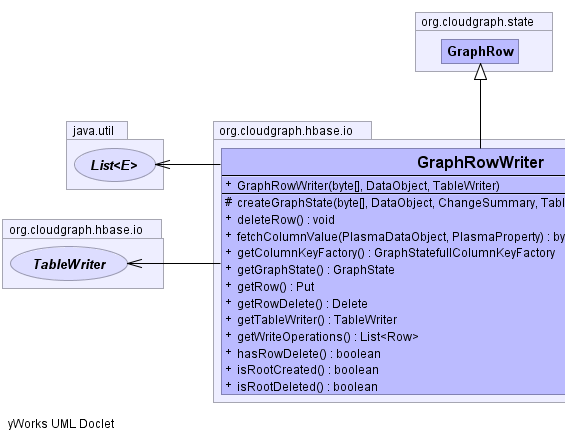
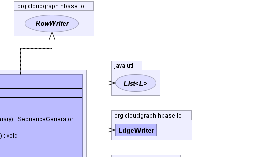

public class GraphRowWriter extends GraphRow implements RowWriter
Acts as a single component within a TableWriter container
and encapsulates the HBase client Put and
Put
operations for use in write operations across multiple logical
entities within a graph row.
TableWriter|  |  |
columnKeyFactory, graphState, rootDataObject, rowKey| Constructor and Description |
|---|
GraphRowWriter(byte[] rowKey,
DataObject rootDataObject,
TableWriter tableWriter) |
| Modifier and Type | Method and Description |
|---|---|
protected GraphState |
createGraphState(byte[] rowKey,
DataObject dataObject,
ChangeSummary changeSummary,
TableConfig tableConfig,
Table con)
Initializes a graph state by querying for a row
based on the given row key and either creating a new (empty)
graph state for an entirely new graph, or otherwise initializing
a graph state based on state or state and management columns in
the existing returned row.
|
void |
deleteRow()
Creates a new row delete mutation, is not exists.
|
byte[] |
fetchColumnValue(PlasmaDataObject dataObject,
PlasmaProperty property)
Returns a single column value for this row given a context
data object and property.
|
GraphStatefullColumnKeyFactory |
getColumnKeyFactory()
Returns the column key factory for this row context
|
GraphState |
getGraphState()
Returns the graph state for this row context
|
Put |
getRow()
Returns the row put mutation.
|
Delete |
getRowDelete()
Returns the existing (or creates a new) row delete mutation.
|
TableWriter |
getTableWriter()
Returns the container for this writer.
|
java.util.List<Row> |
getWriteOperations()
Return the write operations for a row.
|
boolean |
hasRowDelete()
Returns whether there is an existing row delete mutation.
|
boolean |
isRootCreated()
Returns whether the root data object for this writer
is created.
|
boolean |
isRootDeleted()
Returns whether the root data object for this writer
is deleted.
|
addDataObject, contains, getDataObject, getRootDataObject, getRootType, getRowKeyclone, equals, finalize, getClass, hashCode, notify, notifyAll, toString, wait, wait, waitaddDataObject, contains, getDataObject, getRootDataObject, getRootType, getRowKeypublic GraphRowWriter(byte[] rowKey,
DataObject rootDataObject,
TableWriter tableWriter)
public GraphState getGraphState() throws java.io.IOException
RowStategetGraphState in interface RowStategetGraphState in class GraphRowjava.io.IOExceptionpublic GraphStatefullColumnKeyFactory getColumnKeyFactory() throws java.io.IOException
RowStategetColumnKeyFactory in interface RowStategetColumnKeyFactory in class GraphRowjava.io.IOExceptionpublic Put getRow()
RowWriterpublic void deleteRow()
RowWriterpublic Delete getRowDelete()
getRowDelete in interface RowWriterpublic boolean hasRowDelete()
hasRowDelete in interface RowWriterpublic byte[] fetchColumnValue(PlasmaDataObject dataObject,
PlasmaProperty property)
throws java.io.IOException
fetchColumnValue in interface RowWriterjava.io.IOExceptiondataObject - the context data objectproperty - the context propertyStatefullColumnKeyFactorypublic TableWriter getTableWriter()
RowWritergetTableWriter in interface RowWriterpublic boolean isRootCreated()
isRootCreated in interface RowWriterpublic boolean isRootDeleted()
isRootDeleted in interface RowWriterpublic java.util.List<Row> getWriteOperations()
RowWritergetWriteOperations in interface RowWriterprotected GraphState createGraphState(byte[] rowKey, DataObject dataObject, ChangeSummary changeSummary, TableConfig tableConfig, Table con) throws java.io.IOException
java.io.IOExceptionDuplicateRowException - for a new graph if a row already exists
for the given row keyGraphServiceException - where except for a new graph, if no row
exists for the given row keyrowKey - the row keydataGraph - the data graphchangeSummary - the change summaryCloudGraph® is a registered trademark of TerraMeta Software, Inc. Copyright © 2014 - All Rights Reserved.